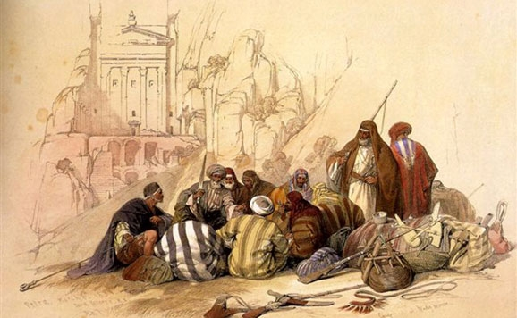
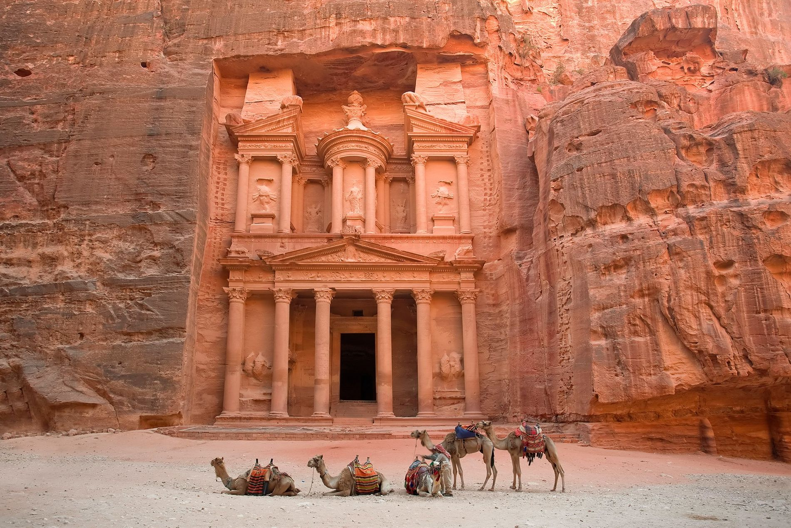
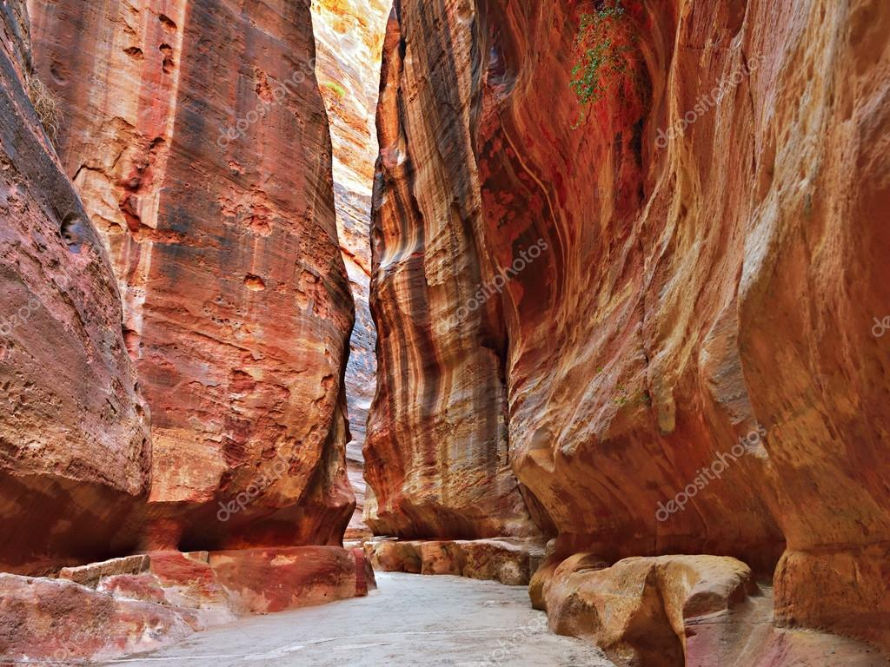

PETRA: THE ROSE CITY
HISTORY
Petra is a historic city in Jordan, famous for its stone-carved buildings and for being one of the main tourist attractions in the region. It was built around the 6th century BC by the Nabataeans, an Arab tribe that controlled the caravan route between Arabia, Egypt, and Syria. During its heyday, Petra was an important commercial and religious center, and its inhabitants built numerous impressive buildings and monuments.
The city was abandoned in the 7th century and remained hidden in the desert for centuries until it was rediscovered by the Swiss explorer Johann Ludwig Burckhardt in 1812.
WHAT TO SEE
Petra boasts numerous impressive monuments and buildings, many of which are carved into the rock. Among the most prominent places to visit are:
- The Siq, a narrow canyon that leads to the entrance of the city
- The Treasury, an impressive rock-carved building that is the most famous monument in Petra
- The Amphitheater, a rock-carved theater that could accommodate 4,000 people
- The Monastery, another impressive rock-carved building that offers panoramic views of the city and the surrounding desert
PHOTO GALLERY


